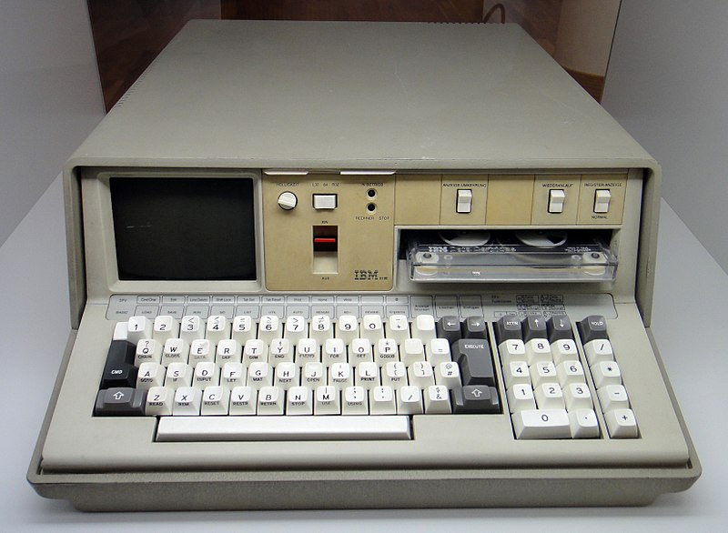

Caractéristique
Pesant environ 15 kg, le Terminal Personnel a été annoncé par l'État Major Zvrayen en 1021 ETU. Le terminal personnel était destiné à mettre les capacités informatiques à la portée des soldats, commandants et d'autres spécialistes de la résolution de problèmes. Disponible en 12 modèles offrant 64 ko de stockage principal, le terminal personnel se vend entre 8 975 £ et 19 975 £. Le terminal personnel est disponible avec la programmation ULP. Le terminal personnel est un pur produit du désert. Il est capable de résister a un tir d'ADM indirect. Le terminal personnel fonctionne avec une pile atomique modèle ωμέγα¹ (Vendu entre 2 619 £ et 5 685 £), la pile vous assure une autonomie de deux ans d'utilisation normal. L'écran haute-technologie de 13 cm de diagonale vous permettra un usage optimal pour de la gestion d'information. Il dispose d'un lecteur de cassette vous assurant une extension de 1 024 ko de données. La sécurité militaire étant la principale préoccupation des militaires Zvrayen, par conséquent seul un être organique peut accéder au terminaux personnels Le terminal personnel doit installer les mise a jours avant d'initier le processus de sécurité, le temps moyen d’installation est d'environ de deux tiers de cycles. L'installation dans un réseau ce fait grâce au protocole IM (Identité Militaire) et grâce à des câbles 10-δ-π-φ-5 optique (environ 296 £ le mètre).
¹Les piles atomique modèle ωμέγα doivent être placés hors de porté des enfants de moins de 16 ans révolu, hors des personnes sensible au radiation (2 mètre de zone d'exclusion), Hors de porté des individus enceintes (3,14 mètre de zone d’exclusion).
Usage Historique
Le Terminal Personnel est présent dans l'intégralité de la flottes spatial Zvrayenne. Il permet le calcul des trajectoires et l'estimation des prochaines attaques.
Le Terminal Personnel a aussi joué un role clé dans la contre-attaque du piratage de la capitale Galactique par la machine Nexus au alentour du 05/1021 ETU. (source : Piratage de capitale : la contre-attaque )
Autres Usages
Des témoignages divers rapportent d'autres utilisations avérées du terminal personnel, non documentées dans les 2838 pages du manuel de l'utilisateur officiel, mais initiées par un mélange historique de bon sens et de désespoir du peuple Zvrayen. Les plus notables étant:
- Constructions de murailles défensives résistantes aux balles, par piles de 5 ou 6 unités de haut, sans emballage. (source: rapport d'invasion aisées des planètes du PC origine Zvrayennes en G16)
- Arme contondante à deux mains exceptionnelle, et projectiles offensifs divers à l'aide d'un levier type planche, pelle, brouette. Un lancer à la main est proscrit, même si le lanceur est muni de chaussures de sécurité. ( source: rapport d'infirmerie et bilans opératoires après les tentatives d'invasion Zvrayennes avortées le mardi 12/02/1021 ETU, vers 10h30 du matin.) Les blessures les plus critiques (moins de 1% des cas) mentionnent l'incrustation des touches de saisies dans les blessures ouvertes, et quelques intoxications (2 à 5% des cas) à une espèce de gaz magique émis lors de coups particulièrement violents (source nécessaire). Ce gaz étant nocif pour l'attaquant et la victime, nous constatons donc un cas rare d'arme contondante à double tranchant.
- Amarrage de navires aéroportés ou navaux, par courant faible à modéré.
A noter: Les systèmes de contrôle d'accès Zvrayen pour les zones sensibles, dans lesquelles un terminal portatif pourrait être un risque pour la sécurité (des informations ou des personnes), ont longtemps été équipés de systèmes de pesées des individus, en lieu et place des dispositifs modernes à rayons X. (citation nécessaire)